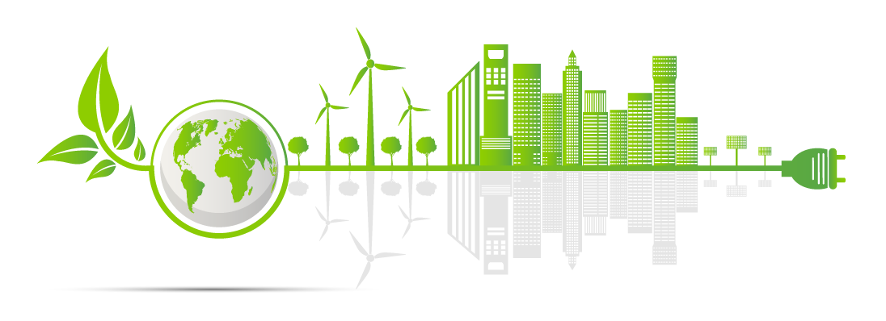

Bem-vindo ao EcoTrace
Seu passaporte digital para a sustentabilidade corporativa.
Explorar Módulos IFRS

Linha do Tempo de Iniciativas
Explore ações sustentáveis com impacto real e mensurado.
Ver Linha do TempoCalculadora de Impacto Pessoal
Descubra seu impacto e como contribuir com a sustentabilidade.
Calcular Agora